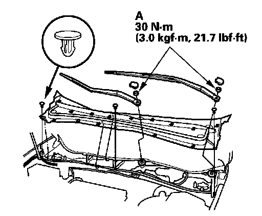
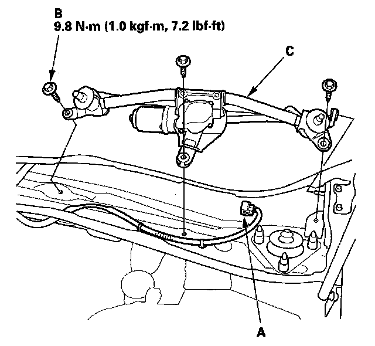
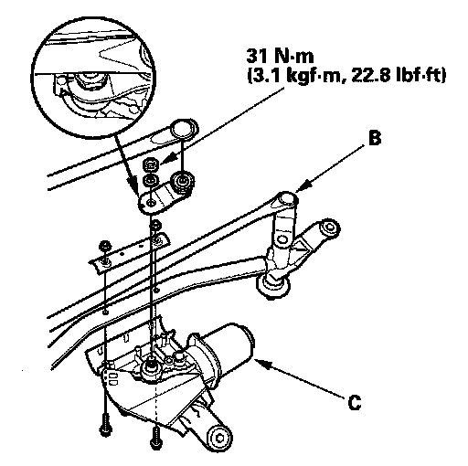

Wiper Motor Replacement
Wiper Motor Replacement
1. Open the hood. Remove the caps, nuts (A), and the windshield wiper arms (B).
2. Remove the cowl covers.

3. Disconnect the 5P connector (A) from the wiper motor.
4. Remove the three bolts (B) and the wiper linkage assembly (C).

5. Make sure the mark of the link to show the original adjustment. Separate the windshield wiper linkage (B) from the wiper motor (C).
6. Install in the reverse order of removal, and note these items:
- Align the marks of the link and the linkage to install the linkage with the original adjustment.
- Apply multipurpose grease to the moving parts.
- Before installing the wiper arms, turn the wiper switch ON, then OFF to return the shafts to the park position.
- If necessary, replace any damaged clips.
7. After installation, adjust the wiper arms.